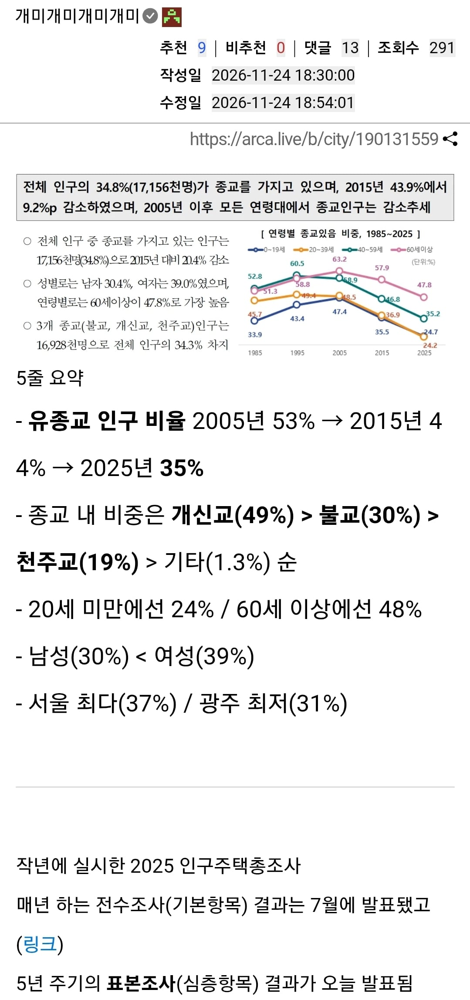

폭락하고 있다는 한국 종교인구 비율ㄷㄷ
댓글
현대 대형교회들 보면 고려말 불교가 이런 느낌이었을까 싶기도 하고ㅋㅋㅋㅋ
신은 죽었지만 인간은 죽지 않았지 종교의 공격적 배타성은 결국 각종 팬덤 커뮤니티 정치 민족등으로 형태만 바뀌고 옮겨갔을뿐 인간은 바뀌질 않아
근데 35%도 졸라 높은듯
기존 신도가 잘 이탈 안하는 것도 있고 주로 중장노년층에 집중되어 있어서 부머세대 인구가 받쳐주는 것도 큰 것도 있지만 아직도 2030 종교인 비중이 20% 가 넘는게 확실히 대단하긴 한 듯
개독교는 인구 줄어갈수록 더 극성일듯
정제
서울이 가장 낮을 줄 알았는데 가장 높네
근데 종교 없어지면 안됨.
저사람들이 우리들이 안하는 봉사활동 불우이웃돕기 엄청 많이함.
종교에 신경을 안쓰더라도 박해까지는 하면 안됨.
박해는 안하지. 다만 거슬릴때는 빠따로 패고싶긴함ㅋㅋ 교진추 사건이나 샘물사건이나 사랑의 교회 기타등등 보면
ㅇㅈ
복지사각지대를 종교가 채워줌
주로 기독교이긴한데
본심이 어떻든 좋은 일 하는 건 좋다봄
예를들면 독거노인 도시락 싸준다거나 음식 준다거나 씻겨드린다거나 등등
사회복지재단중 종교단체가 꽤 많고
종교계 법인 중 절반이 개신교더라
국고지원 없는
순수한 종교복지시설의
비율은 100퍼센트?
봉사활동 불우이웃돕기랍시고 여행금지국가 가서 선교하다 피랍만 안되면 솔직히 별 문제 없긴 함, 별 븅신같은 것들이 애기들 잠지 만지고 불상 훼손 오줌싸고 갈등 유발하고 횡령하고 자기가 예수의 현신이니 하나님 죽어! ㅇㅈㄹ 안하면 종교 좋지~ 누가 뭐라해
자업자득. 백날 돈타령에 속세보다 더 썩어빠진 짓들을 해대는데 종교를 왜 믿음?
종교는 없어질 순 없음 사이비 같은걸 제쳐두더라도
사회의 구석진 곳을 그나마 봐주는게 종교의 역할이라 감소추세도 점차 줄어들거라고 생각함
무신론자를 위한 종교 였었나
알랭드보통이 쓴 책인데 한번 읽어보셈
종교의 역할에 대해 좀 생각하게되더라
종교가 꼭 필요한지는 의문이지만, 혹시 가지게 되더라도 좀 나이를 먹든지 경험을 쌓든지 해서 세상을 알고나서 가지는게 좋은 거 같음.
어릴 때부터 종교가 있는 건 좀 아닌거 같음.
7줄짜리를 5줄로 요약한거임? 그 밑에 3줄 더 붙이고?
하느님 맙소사
저 그래프가 종교인척 하는 사이비 새끼들 없어지고 있는거라고 생각하면 편함 종교의 순기능도 무시할 수 없기 때문에 종교는 유지해야됨
무신론자지만 종교있어야하는거같음..
깊게 생각해보면 애도 안낳아 결혼도 안해 일자리는 ai가 가져가 거기다 신앙도 없어지고
그럼 삶에있어서 의미있는게 뭐가있을지 모르겠다
개독50퍼인거 보니 나라 좆망이네 ㅋㅋ
종교 내 비중 이라 35%의 49%라 전국에 17% 정도인 거임
아직 희망잇네
개독들 다 몰려와서 댓쓰네
다시 올라갈거임. 나도 원래 무교였는데 지금 하루히루 컴퓨터 앞에서 기도하고있음
옴니시아여 우리에게 일용할 전력을 주시고 오작동에 들게 하시 마옵소서
좆독교 새끼들
일요일마다 교회주변 골목 구석구석 주차 처박아 놓는 좆지랄 보면
참 성스러운 종교활동 하고들 계시는구나 한다 ㅋㅋ
내 삶이 힘들어서 의지하고 싶은건 동일하나 종교가 의지가 아니라 회피의 수단이 될 뿐, 의지한다고 해서 아무런 근본적 해결책이 되지 못하니까
먹고 살기 바빠진것이 한몫함
전부 점보거나 사주팔자로 빠짐.
종교의 순기능은 부정하지않지만 있지도 않은 신을 믿는데에 거부감이 너무커
불교에 가까운 무교이긴 한디 ㅋㅋㅋ
난 당당하게 말하고 다님 무교라고
하지만 신은 있다고 생각함 그게 유일신이 아니라고 생각할 뿐
그렇다고 일본처럼 온갖 귀신을 다 믿는건 아니고
신이라는 존재가 우리를 만들었다 라는 개념은 아니고 그냥 신이라는게 존재하면 재밌겠다 라는 정도의 생각임
근데 그 개지랄병을 떨면서 종교인구가 늘어나길 바라는건 아니지? 양심은 챙겨야지ㅎㅎ
지금까지 누구 하나 구원 받은 사람 있나, 해탈한 사람 있나, 검증된 사례 하나 없는데 돈쓰고 시간쓰고 하는게 이상한거지. 그냥 정신건강을 위한 현실도피 일 뿐
기독교가 주말에 하루를 예배를 보는데 써야함.
그 외에도 평일성경교실등 다양한 활동을 요구하는데
이게 바쁜 현대사회에 점점 맞지않는거
과거에는 종교활동이 지금의 성인소모임 역할이고하나의 여가였음
지금은 소모임이나 동아리찾기가 쉬워서 아예 본인 취향대로 가면됨.
개신교가 제일 많이 줄어든거고
활동을 그다지 요구하지않는 불교나 천주교는 별 변화없음
교회에 대한 혐오도 있긴 하겠지만,
그냥 사회 전체적으로 여유가 없어짐